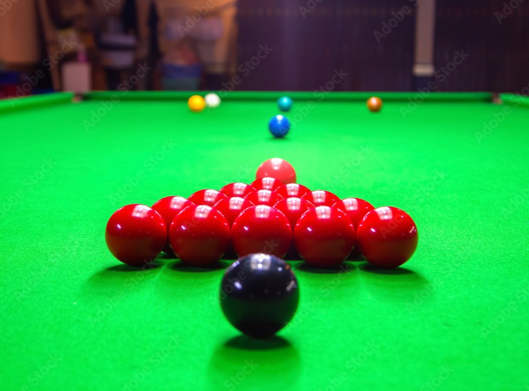

Opettele snookeria
Snookerin perusteet
Snookerissa tavoitteena on tehdä vastustajaa enemmän pisteitä. Pisteitä saadaan pussittamalla palloja oikeassa järjestyksessä. Pelissä on 15 punaista palloa sekä kuusi värillistä palloa ja valkoinen lyöntipallo.
Pelaaja aloittaa pelin aina pussittamalla punaisen pallon ensimmäiseksi. Sen jälkeen tavoitteena on pussittaa jokin värillisistä palloista. Punaisten ja värillisten pallojen vuorottelu jatkuu niin kauan kuin punaisia palloja on pöydällä.
Pallojen pisteet
Punainen pallo on yhden pisteen arvoinen. Värillisten pallojen pistearvot ovat seuraavat:
Keltainen = 2 pistettä
Vihreä = 3 pistettä
Ruskea = 4 pistettä
Sininen = 5 pistettä
Pinkki = 6 pistettä
Musta = 7 pistettä
Kun kaikki punaiset pallot on pussitettu, värilliset pallot pussitetaan niiden pistearvon mukaisessa järjestyksessä. Viimeisenä pussitetaan musta pallo.
Perustekniikka
Snookerissa hyvä lyöntitekniikka on tärkeä osa pelaamista. Pelaajan kannattaa pitää vartalo vakaana ja katse kohdistettuna lyöntiin. Keppiä liikutetaan mahdollisimman suorassa linjassa.
Valkoisen pallon hallinta on myös erittäin tärkeää. Pelaaja ei pelkästään yritä pussittaa palloa, vaan pyrkii samalla saamaan valkoisen pallon hyvään paikkaan seuraavaa lyöntiä varten.
Breakin rakentaminen
Hyvä pelaaja pyrkii tekemään useita onnistuneita lyöntejä peräkkäin. Tätä lyöntisarjaa kutsutaan breakiksi. Breakin rakentamisessa tärkeää on suunnitella seuraava lyönti jo ennen nykyisen lyönnin pelaamista.
Alussa tärkeintä on opetella pallojen pussittaminen, oikea lyöntiasento ja valkoisen pallon hallinta. Kun nämä perustaidot kehittyvät, voidaan siirtyä taktiikan ja breakien harjoitteluun.
Snooker-pelin kulku tiivistettynä
Snooker-erä alkaa, kun pelaaja yrittää pussittaa punaisen pallon. Tämän jälkeen pelaaja yrittää pussittaa värillisen pallon. Punaisten ja värillisten pallojen vuorottelu jatkuu niin kauan kuin pöydällä on punaisia palloja.
Kun kaikki punaiset pallot on pussitettu, värilliset pallot pelataan niiden pistearvon mukaisessa järjestyksessä. Viimeisenä pelataan musta pallo.
Pelaaja pyrkii samalla rakentamaan mahdollisimman suuren breakin. Break tarkoittaa peräkkäisten onnistuneiden lyöntien sarjaa. Jos pelaaja epäonnistuu lyönnissä tai tekee virheen, vuoro siirtyy vastustajalle.
Lue lisää snooker-pelin kulusta .
